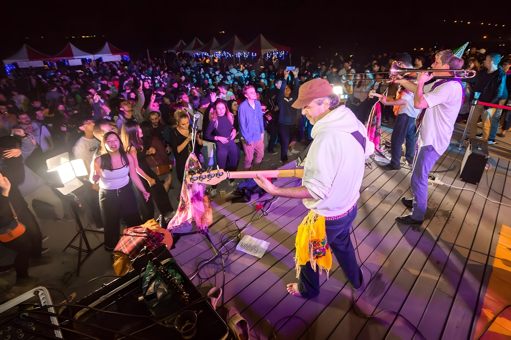

2018
8 月 31 日 · 台北 PIPE Live House
Balkazar 在晚上 8:30 演出自己的曲目；The Toasters 主唱 Rob「Bucket」Hingley 隨後由台灣樂團 Skaraoke 伴奏演出。我們是同一場音樂祭的演出陣容，不是與 Rob 合演。
歷年演出
Balkazar 在 PIPE Live House 的完整演出；同場有 The Toasters 主唱 Rob “Bucket” Hingley、Skaraoke 及海外音樂人。

Balkazar 在晚上 8:30 演出自己的曲目；The Toasters 主唱 Rob「Bucket」Hingley 隨後由台灣樂團 Skaraoke 伴奏演出。我們是同一場音樂祭的演出陣容，不是與 Rob 合演。
完整演出影片
樂團照片
Taiwan Ska Fest 現場. 照片來自樂團演出資料庫，沒有確切日期的照片不會標註特定年份。
想邀請 Balkazar 到你的活動演出？ 洽談演出 ↗